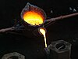

casting

Definition: Casting is a manufacturing process in which a liquid material is usually poured into a mold, which contains a hollow cavity of the desired shape, and then allowed to solidify. The solidified part is also known as a casting, which is ejected or broken out of the mold to complete the process. Casting materials are usually metals or various time setting materials that cure after mixing two or more components together; examples are epoxy, concrete, plaster and clay. Casting is most often used for making complex shapes that would be otherwise difficult or uneconomical to make by other methods. Heavy equipment like machine tool beds, ships' propellers, etc. can be cast easily in the required size, rather than fabricating by joining several small pieces. Casting is a 7,000-year-old process. The oldest surviving casting is a copper frog from 3200 BC.
Source: Wikipedia
Wikipedia Page (Something wrong with this association? Let us know.)
Wikidata Page (Something wrong with this association? Let us know.)